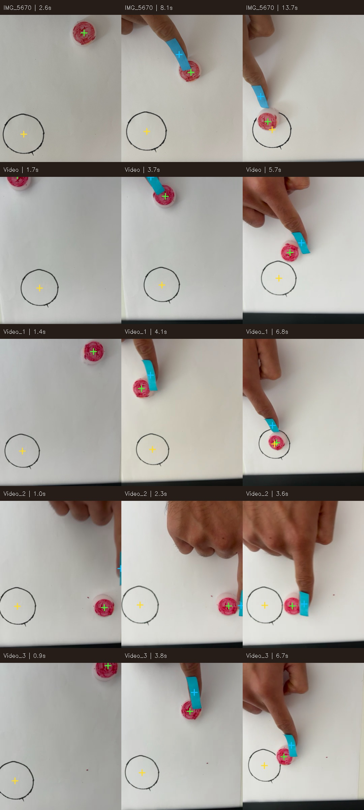
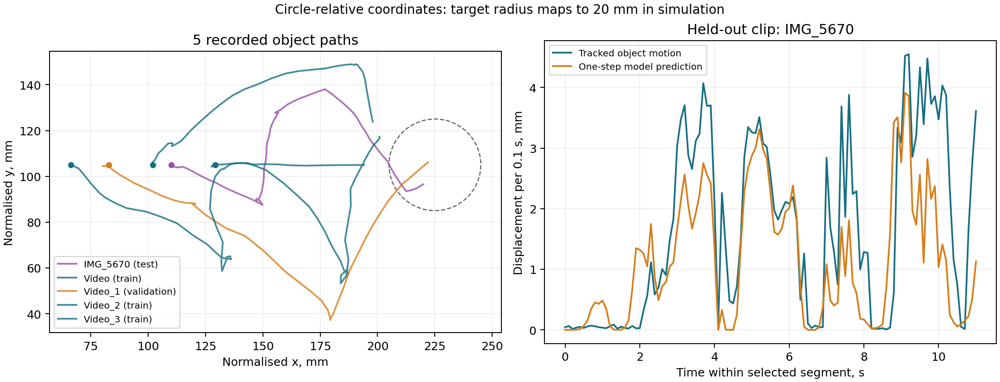
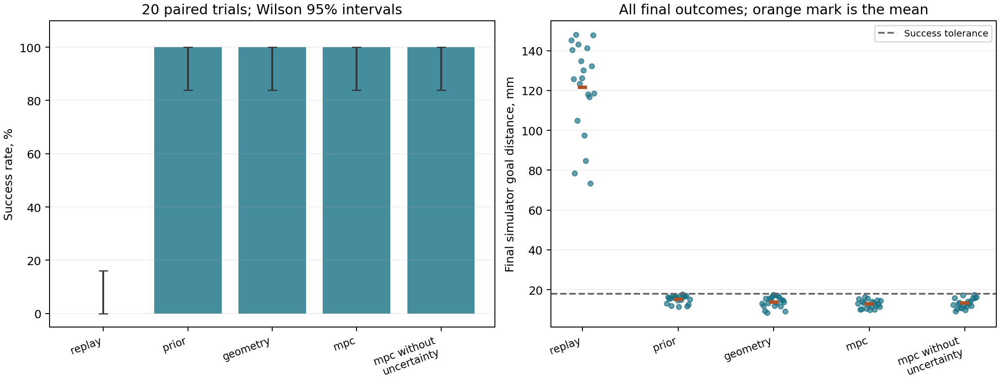

Interactive submission report ↗
5 home recordings → learned contact dynamics → a physical MuJoCo arm.
New: SAC, imitation, MPC and classical feedback comparison
Personal videos supplied by the user. The model learns from tracked finger and cap positions; the robot moves the object through simulated contact. This is a state dynamics world model.
The learned planner's first paired trial. The tolerance is 18 mm after a one-second hold. The arm observes MuJoCo ground-truth states.
289 usable transitions at 10 Hz, including 195 with object motion above 1 mm in the normalised frame. The extractor retains each video's longest uninterrupted segment with both markers and an acceptable target-circle fit. Later occluded segments are excluded. Source hashes and original selected timestamps are preserved.
| Clip | Split | Retained segment | Transitions | Moving | Preview |
|---|---|---|---|---|---|
| IMG_5670.mov | test | 2.6-13.7s | 111 | 63 | Tracking |
| Video.mov | train | 1.7-5.7s | 40 | 29 | Tracking |
| Video_1.mov | validation | 1.4-6.8s | 54 | 35 | Tracking |
| Video_2.mov | train | 1.0-3.6s | 26 | 15 | Tracking |
| Video_3.mov | train | 0.9-6.7s | 58 | 53 | Tracking |
Green: cap. Blue: finger marker. Yellow: fitted target centre.

The fitted circle anchors image position and approximate scale. Its radius maps to a chosen 20 mm simulator radius. Prediction distances below are normalised simulator distances; physical dimensions in the videos were not measured. This compensates approximate translation and zoom, rather than full camera perspective or rotation.
Three small contact-gated models learn displacement gains and effective contact range. Rotation equivariance is built into their relative-state inputs and vector outputs. Training bootstraps whole training clips; validation selects checkpoints. The test clip is excluded from fitting, the demonstration prior and checkpoint selection.

Held-out mean vector error: 0.89 mm; zero-motion baseline: 1.64 mm; fixed analytic-contact baseline: 1.22 mm. Moving-transition error: 1.27 mm. Five-step and ten-step open-loop errors grow to 4.06 and 7.92 mm. There is only one test recording.
All five controllers receive identical starts, goals and three possible floor-friction values across twenty seeded trials. Geometry is a hand-coded baseline. MPC ranks demonstration and geometric proposals using learned dynamics over four steps, with an empirical uncertainty penalty.
| Controller | Successes | Mean final distance, mm | p95 decision, ms |
|---|---|---|---|
| replay | 0/20 | 121.5 | 0.06 |
| prior | 20/20 | 15.2 | 0.23 |
| geometry | 20/20 | 13.8 | 0.08 |
| mpc | 20/20 | 12.8 | 7.26 |
| mpc_no_uncertainty | 20/20 | 13.3 | 7.11 |

MPC succeeds in 20/20 trials; geometry succeeds in 20/20. The mean final-distance difference (geometry minus MPC) is 1.00 mm; the descriptive paired bootstrap interval is -0.48 to 2.47 mm. The interval includes zero, so this does not establish a control advantage. MPC's Wilson success-rate interval is approximately 84%-100% for this sampled suite.
Circle-relative coordinates made the cropped-paper recordings usable. Compression shifted the cap toward magenta and made thin black ink difficult to detect; revised hue limits, low-saturation circle detection, outline coverage checks and regression tests fixed observed identity failures. Occlusions still shorten the usable data. Raw action replay failed every simulation trial; adapting contact and direction matters.
One-step predictions improve on both prediction baselines on this test clip, but longer rollouts drift. The simple task is already solved by the geometric controller and the demonstration prior. Geometric MPC proposals carry substantial task knowledge. Five clips on one surface and object, approximate camera correction, different finger/tip contacts and simulator-state observations limit generalisation claims. No real robot, VLA, image encoder or generated-video model is used.
Every controller video and per-trial outcomes · Prediction metrics and split IDs · Paired comparison · Dataset manifest and hashes · Earlier hand-coded video retargeting demo